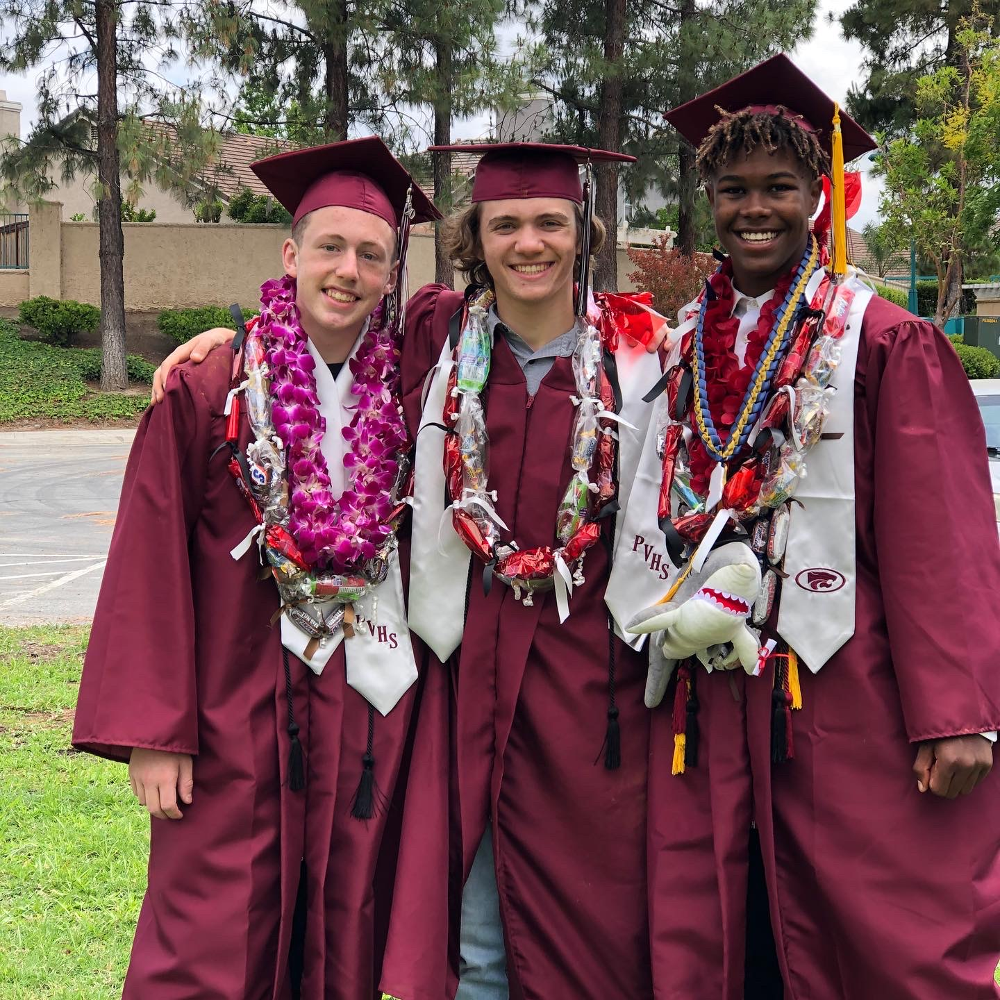
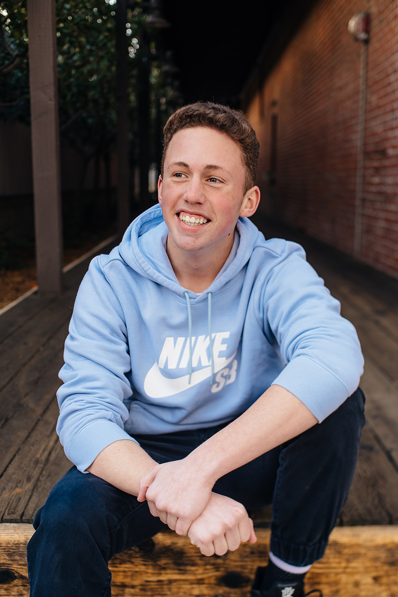
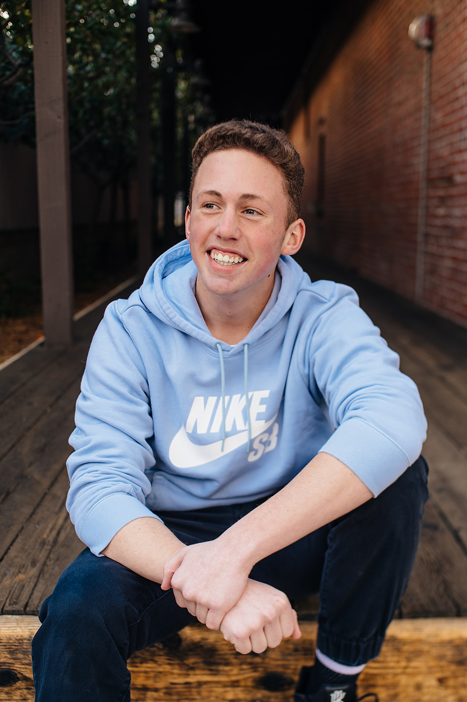

Jared Preston
My name is Jared Preston and I attended the University of California Riverside, which is where I am looking to obtain my degree in Accounting. I grew up in the Southern California area all my life and have a lot of fun going all around the area. I am a consistent and passionate worker who pushes to be my best self everyday. I have worked at places like Pechanga and Palmer Association who have given me incredible experience. A lot of what I know today has come from those places. ALl my life, I have had a lot of interest in building my skill set to be as vast as possible and feel like I have become a person with many skill sets. I am hoping places looking to hire can see that I am a true benefit being added on to the team. I have extended knowledge in Powerpoint, Excel, Word, and Powerpoint. I am also very knowledgeable in every aspect of technology, including coding and hardware. I also have a great skill set in finances and extensive knowledge in math. If I am hired, not only a person who has extensive skills, but also a person who is looking to make a workplace better and better every single day.
I grew up in Southern California and had the wonderful privilege of growing up with an incredible family and amazing friends. I lived in Menifee all of my life and I am very grateful to have attended all of my hometown schools. From elementary school to college, I have been exceptional by always obtaining honor rolls for all my years of school and striving to learn as much as I can. Anyone who has met me will tell you I am dedicated, loyal, and passionate about anything I am doing. I have always finished what I started, no matter how hard it gets.
I am looking to work somewhere that recognizes the things I bring to the table and anywhere who is willing to hire me will get everything desired in an employee and more. With a vast skill set and the dedication, I will work hard every single day to be the most beneficial to a company I can be. “Strive for greatness.” That quote by one of the greatest to ever do it, Lebron James, is a quote I work to follow everyday, in everything I am doing. Listed below is all my work experience and social media you can look more into my life and what I am about. I hope to be in contact with a place that sees what I bring to the table and together make the workplace a place to be. Take care.
Experience
Youth Advisor
• Pechanga Tribal Government
• Worked with groups of kids for a summer and helped with events.
• Experience with controlling groups and getting tasks done.
Assistant
• Worked with owner of Krew Tech and did any task he wanted me to get done.
• Handle finances and managing his store.
Mowing Lawns
• Worked with friends and went around neighborhood and mowed lawns.
• Was my first work experience and mowed up to 5 lawns a day.
Education
UC Riverside
Portfolio



